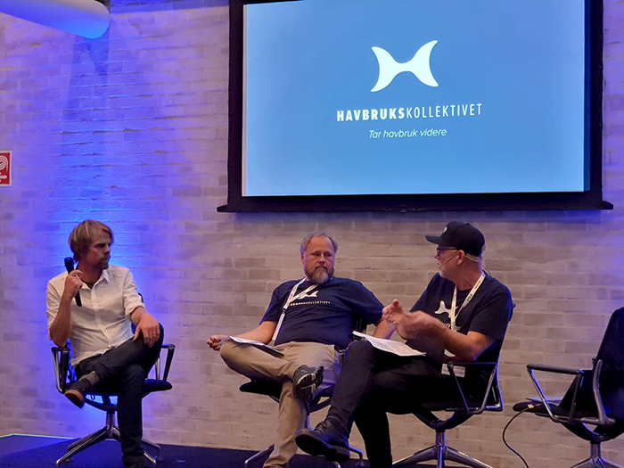

Havbrukskollektivet er et nettverk av enkeltstående selskaper innen havbruksnæringen som tilbyr teknologiske løsninger for fremtiden.
Havbrukskollektivet ble opprettet av Anteo, SeaSmart, TIALTA, MT-Aqua og Optimeering Aqua, men vil gi flere i bransjen mulighet til å bli en del av deres felles visjon.
Ambisjonen er å etablere en felles plattform for havbruksnæringen hvor de ulike systemene sømløst kommuniserer med hverandre. Ønsker du mer informasjon om nettverket, eller bidra til å etablere en felles plattform. Fyll inn kontaktskjema, så tar vi kontakt.
Interessert i å registrere deg. Klikk her:

Fem gründerselskaper går nå sammen for å etable-re et havbrukskollektiv som skal lage en felles digital plattform. Lanseringen ble gjort under årets Sysla Live: Ocean 2018 i september i Grieghallen. Gründer i Anteo Sverre Marvik og styreleder i Havbrukskollek-tivet Christian Erichsen ble intervjuet om den nye satsningen av festivalsjef, Anders Waage Nilsen.
Lenke til artikkel: Les om Havbrukskollektivet her: artikkelen